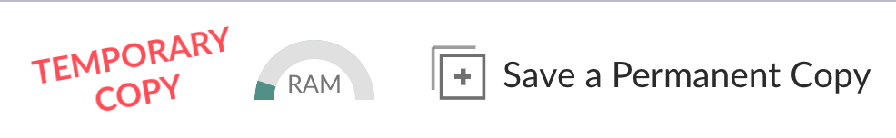

1 Überblick
Wir wollen uns hier nicht mit Fragen beschäftigen Warum R? (und auch nicht mit Warum, R?). Stattdessen soll Ihnen diese Seite helfen, R und was sonst noch so dazu gehört, zu installieren.
Wenn man lose von “R” spricht, meint man eigentlich neben R noch zusätzlich Software:
- R
- RStudio
- R-Pakete
- Bayes-Software
Im Folgenden ist für diese Punkte jeweils eine kurze Erklärung gegeben. Verzage nicht: Im Internet finden sich viele Ort, da werden Sie geholfen (v.a. StackOverflow), wenn Sie bei der Installation oder Verwendung von R Probleme haben sollten.
2 Versions-Infos und Update
Auch wenn Sie R (und seine Freunde) schon installiert haben, lohnt es sich, zu schauen, ob Sie (sie) noch aktuell sind, oder ein “outdated model”, um dem Terminator zu sprechen.
Prüfen Sie die Versionsnummer von R, z.b. so:
getRversion()## [1] '4.1.0'So bekommen Sie einen Überblick über die geladenen Pakete
(Das Paket sessioninfo) muss installiert sein.
library(sessioninfo)
package_info()Infos zu einem beliebigen, installierten Paket (z.B. die Versionsnummer) kann man z.B. so bekommen
package_info("ggplot2")3 Installation
3.1 R
R ist ein Softwarepaket für statistische Berechnungen, mehr Infos hier.
R können Sie hier herunterladen, für alle gängigen Betriebssysteme (Windows, Mac, Linux) und in der aktuellen Version.
Wenn Sie gefragt werden, dass Sie einen “Mirror” auswählen sollen, heißt das, Sie sollen einen Computer wählen, von dem Sie R herunterladen. Der sollte möglichst nicht zu weit weg stehen, dann spart es vielleicht etwas Zeit und Bandbreite.
3.2 RStudio
RStudio ist eine grafische Benutzeroberfläche für R (GUI). Das hört sich nach “ganz nett, aber brauch ich das” an. Tatsächlich ist RStudio für das praktische Arbeiten ein großer Gewinn.
Zum Download, wieder für alle gängigen Betriebssysteme.
3.3 RStudio Cloud
RStudio Cloud ist eine gute Alternative, wenn Sie R und Co. nicht auf Ihrem Rechner installieren möchten/können. Sie können es im Browser nutzen; eine Installation auf Ihrem Rechner ist nict nötig. Praktische Sache. Ein gewisser Zeitumfang ist kostenlos1, s. die Plans. Für Studentis gibt es günstigere Pläne. Größere Pakete sind dann kostenpflichtig2.
3.3.1 Konto anlegen
Sie können sich hier einen (ggf. kostenlosen) Account anlegen.
3.3.2 Projekte
Analog zu den RStudio-Projekten gibt es genauso in RStudio Cloud Projekte. Ein Projekt ist im Prinzip ein Ordner, in dem sie alle relevanten Information (Daten, Code …) zusammentragen.
Es ist praktisch, wenn Schulungsmaterialien (Daten, Syntax …) in einem RStudio-Projekt bzw. - noch komfortabler für Sie - einem RStudio-Cloud-Projekt bereitliegen. In einem RStudio-Projekt kann Ihr Dozenti Ihnen die benötigten Pakete schon vorab installieren, was logischerweise das Komfortgefühl erhöht.
Damit Sie ein RStudio-Cloud-Projekt nutzen können, muss Ihnen Ihr Dozenti den Link zum Projekt bereitstellen. Das könnte z.B. so aussehen https://rstudio.cloud/project/3324354.
Wenn Sie dieses Projekt öffnen, haben Sie erstmal nur Leserechte. Das erkennen Sie an dem roten Schriftzug “Temporary Copy”. Um Schreibrechte zu bekommen, müssen Sie das Projekt in Ihrem Konto abspeichern. Dafür klicken Sie auf den Button “Save a Permanent Copy”.

3.4 R-Pakete
3.4.1 Was sind R-Pakete?
Was sind R-Pakete? R an sich kommt mit einem begrenzten Umfang von Funktionen. Die ganzen neuen Entwicklungen in der Statistik/Datenanalyse finden sich in Erweiterungen von R, die man “Pakete” (packages) nennt. Stellen Sie sich das wie ein Add-on/Plug-in vor, wie Sie es vielleicht bei Ihrem Browser nutzen: Erweiterungssoftware für ein Programm, so dass die Funktionalität erweitert wird.
Es gibt eine Art zentralen “App Store”, namens CRAN von dem man (kostenlos, ohne Anmeldung, virengeprüft) R-Pakete installieren kann.
Zum Installieren von R-Paketen kann man den Befehl install.packages() verwenden,
s. Beispiel unten.
Natürlich müssen Sie auch wenn Sie RStudio Cloud in einem eigenen Projekt arbeiten, die nötigen Pakete installieren. ⚠️ Einige Pakte benötigen mehr als die 1 GB Arbeitsspeicher, die im freien Zugang von RStudio enthalten sind. Für diese Pakete müssten Sie dann ein kostenpflichtiges Abo eingehen, wenn Sie die Pakete in Ihrem Projekt installieren wollen.
Arbeiten Sie in einem Ihnen bereitgestellten Projekt, hat ein netter Mensch die nötigen Pakete für Sie vielleicht schon installiert; Sie müssen dann die Pakete nicht noch extra installieren.
3.4.2 Welche R-Pakete brauche ich?
Hier ist eine Auswahl von Paketen, die ich gerne nutze:
pckgs1 <-
c(
"tidyverse",
"rstatix",
"corrr"
)Führen Sie den Code oben aus und dann führen Sie den folgenden Code aus, um die Pakete zu installieren:
install.packages(pckgs1)Eine (alphabetisch sortierte) Liste von R-Paketen auf CRAN findet sich hier. Und ein Überblick von R-Paketen nach Themen gibt’s hier.
Hier ist eine ausführlichere Liste an R-Paketen, natürlich ist das eine subjektive Auswahl, so ähnlich, wie wenn Sie mich nach meinen Lieblingsgerichten fragen würden.
pckgs2 <-
c(
"tidyverse",
"rstanarm",
"bayesplot",
"rstatix",
"forcats",
"tidytext",
"janeaustenr",
"stringr",
"wordcloud",
"gutenbergr",
"forcats",
"scales",
"janitor",
"tidymodels",
"modelr",
"leaps",
"parallel",
"corrr",
"ggfortify",
"fastDummies",
"nycflights13",
"arm",
"hrbrthemes",
"viridis",
"GGally",
"cowplot",
"skimr",
"see",
"datasets"
)install.packages(pckgs2)Eine automatisierte Methode, um (nur) die Pakete zu installieren,
die noch nicht auf Ihrem Rechner (oder dem RStudio Cloud Server) installiert sind,
bietet das R-Paket pacman (welches dann auch installiert sein muss):
pacman::p_load(char = pckgs2)3.5 Hinweise
- Sie müssen Pakete nur einmal installieren, aber jedes Mal starten, wenn Sie R (bzw. RStudio) öffnen (mit
library(paketname)). - Hin und wieder sollten Sie Ihre Pakete aktualisieren. Am einfachsten geht das mit Klick auf den Button “Update” im Reiter “Packages” in RStudio.
- Wenn Sie Pakete installieren (oder updaten, was auf das gleiche hinausläuft), sollten keine Pakete gestartet sein. Das erreichen Sie am einfachsen, wenn Sie R neu starten (oder RStudio neu starten); zu dem Zeitpunkt sind keine Pakete geladen. Führen Sie jetzt die Installation (das Aktualisieren) der Pakete aus.
- Wenn R Sie fragt, ob Sie R neu starten wollen, bevor Sie die Pakete installieren, drücken Sie auf “nein” (wenn Sie wissen, dass keine Pakete gestartet sind).
4 Wenn nichts mehr hilft …
Wenn Sie Probleme mit der Installation haben, ist der vielleicht beste Tipp bei StackOverflow nach einer Lösung zu suchen.
Allgemeiner: Googeln hilft. Wenn Sie ein Problem haben, ist die Wahrscheinlichkeit hoch, dass es sonst jemand auch schon mal hatte, ihr Problem.